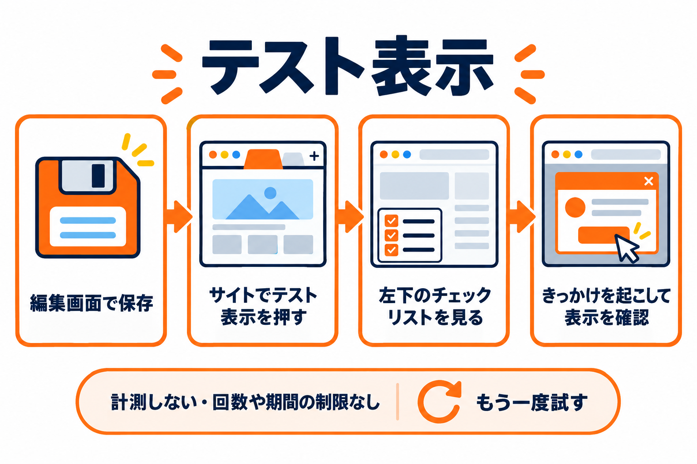
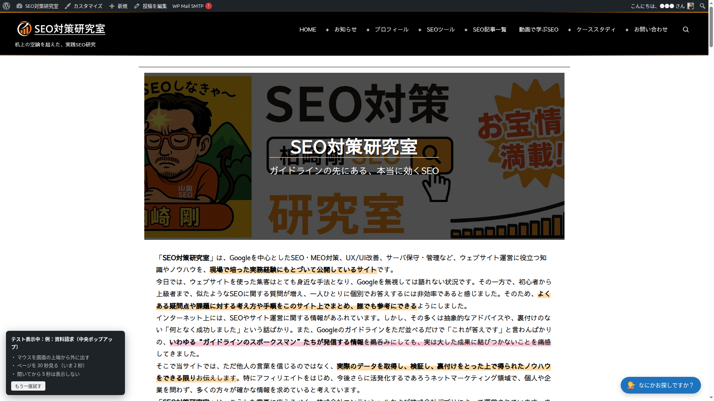
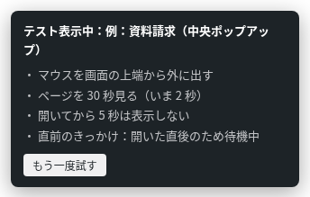
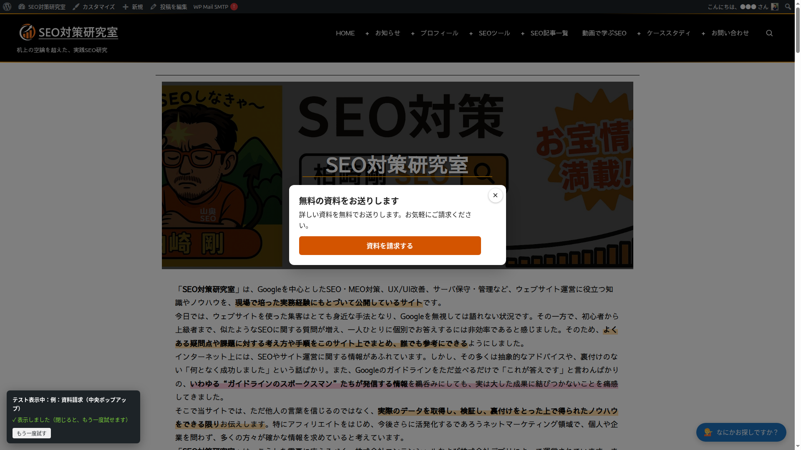

サイトでテスト表示
保存したバナーを、サイトのトップページで実際に表示して試す機能です。画面の左下に、あと何をすれば表示されるかが出ます。

開き方
1
編集画面でバナーを保存します（下書きでも構いません）。
2
プレビューの下の「サイトでテスト表示」を押します。バナー一覧の行の「テスト表示」からも開けます。
3
新しいタブでサイトのトップページが開き、画面の左下に「テスト表示中：（バナーの名前）」の箱が表示されます。
4
箱に書かれた操作（例:「マウスを画面の上端から外に出す」）を行い、バナーが表示されることを確かめます。

テスト表示の決まり
| 項目 | テスト表示では |
|---|---|
| 表示するページ・出し分け | 無視します（トップページで表示します） |
| 掲載期間・表示する回数・閉じたあとの日数 | 無視します（何度でも試せます） |
| サイトに表示する（オン・オフ）・下書き | 無視します（停止中や下書きのバナーも試せます） |
| 表示のタイミング（きっかけ・開いた直後・入力中） | ふだんと同じに働きます |
| 集計 | 記録しません |
| ほかのバナー | 表示しません（試しているバナーだけです） |
| 内容 | 保存した内容で表示します。保存していない変更は反映されません |
左下の箱の見方
箱の中身は、0.5 秒ごとに書き換わります。満たした項目には ✓ が付きます。

| 表示 | 意味 |
|---|---|
| マウスを画面の上端から外に出す | PC で、マウスが上端から外に出たときのきっかけを試します。 |
| 下に読んだあと、上に戻るスクロールをする | スマホで、上に戻るスクロールのきっかけを試します。 |
| ページを ○ 秒見る（いま ○ 秒） | 「○秒見たとき」のきっかけです。いま何秒たったかが表示されます。 |
| ○% までスクロールする（いま ○%） | 「○％までスクロールしたとき」のきっかけです。いまどこまで読んだかが表示されます。 |
| 開いてから ○ 秒は表示しない | 「開いた直後」の秒数です。過ぎると ✓ が付きます。 |
| 組み合わせ：すべて満たしたとき | 「すべてそろったとき」を選んでいるときに表示されます。 |
| 直前のきっかけ：画面に出ていない | きっかけが起きたとき、ページが画面に出ていなかった（別のタブを見ていた）ため見送りました。 |
| 直前のきっかけ：開いた直後のため待機中 | 「開いた直後」の秒数の間だったため見送りました。 |
| 直前のきっかけ：入力中のため見送り | フォームに入力中（または入力のあと 10 秒以内）だったため見送りました。 |
| 直前のきっかけ：マウスの移動が少ないため見送り | ページを開いてからのマウスの動きが少なかったため見送りました。マウスを少し動かしてから試してください。 |
| 表示しました（閉じると、もう一度試せます） | バナーを表示しました。 |
| この端末（PC / スマホ）では表示する条件がありません | いまの端末で使えるきっかけがありません。表示のタイミングタブを見直してください。 |

もう一度試す
バナーを閉じたあと、箱の「もう一度試す」を押すと、もう一度きっかけを待ちます。「開いた直後」の秒数はページを開いたときから数えるので、もう一度その秒数を待つ必要はありません。最初からやり直したいときは、ページを読み込み直します。
スマホで試すには
テスト表示は、開いた端末で判断します。スマホの表示を試すには、スマホで WordPress にログインしてから編集画面の「サイトでテスト表示」を押すか、パソコンのブラウザの幅を狭くして（目安として 782px 以下）ページを読み込み直します。
テスト表示は、そのバナーを編集できる人がログインしているときだけ使えます。リンクには有効期限があり、時間がたったリンクや、権限のない人が開いたときは、テスト表示にならずにふつうのページとして開きます。そのときは編集画面を開き直してから、もう一度ボタンを押してください。
テスト表示の箱とバナーは、ボタンを押したあなたのブラウザにだけ表示されます。ほかの訪問者には見えません。